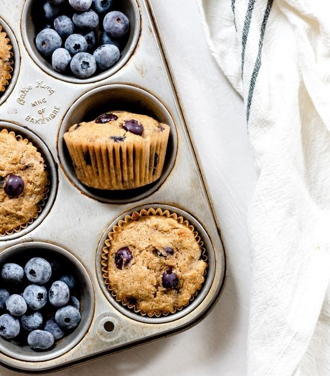

Muffin Recipe
Ingredients:
- 2 cups all-purpose flour
- 3/4 cup granulated sugar
- 1 teaspoon baking powder
- 1 teaspoon salt
- 1 cup whole milk
- 1/4 cup unsalted butter, melted
- 2 eggs
- 2 teaspoons vanilla extract
- 8 oz blueberries fresh
- 21 cup vegetable oil
- 1/4 cup sour cream
- 1 tablespoon lemon zest
- 1/4 cup lemon juice
| Prep Time |
10 mins |
| Cook Time |
20 mins |
| Total Time |
30 mins |
| Servings |
12 |
| Calories |
348 |
Instructions:
-
Preheat to 400 degrees F.
Prepare your muffin tin by either greasing the wells or
adding paper liners.
-
Add the flour, baking powder and salt to a large bowl then
whisk together and set aside.
-
Toss the blueberries In about a tablespoon of the dry
mixture and set aside.
This will help prevent them from sinking in the batter.
-
In medium bowl, add melted butter, oil, milk, sugar,
vanilla, eggs, lemon juice,
sour cream, and lemon zest then whisk together until
combined.
-
Pour the wet mixture Into the dry then mix until almost
combined.
Add the blueberries and fold in.
-
Transfer batter to your prepared muffin tin filling the
wells to the top.
Cover with the streusel topping.
- Bake for about 20 minutes at 400F.
-
Let the muffins cool in the tin for at least 10 minutes
before removing.
